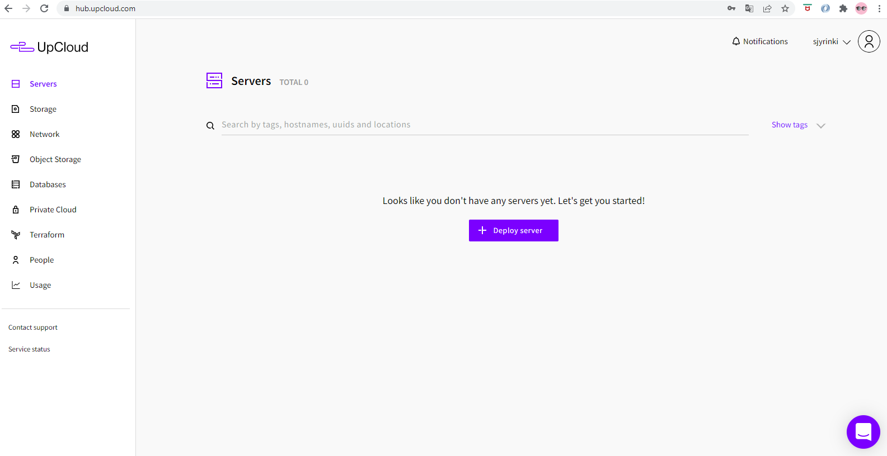
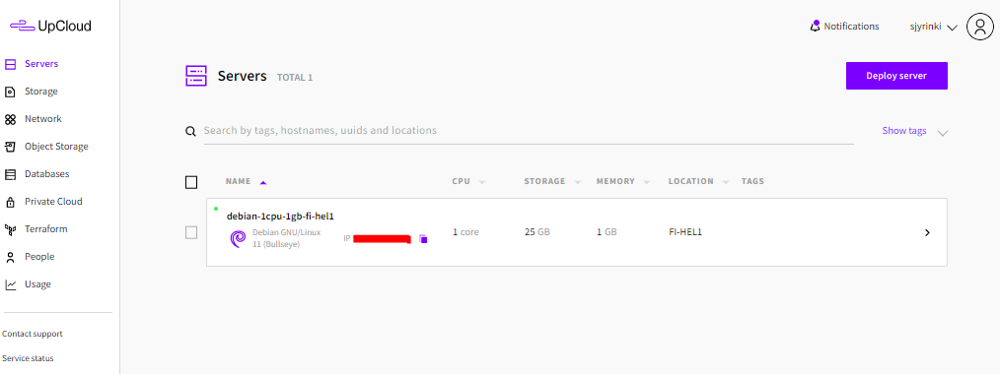
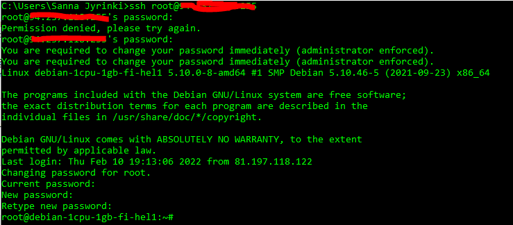
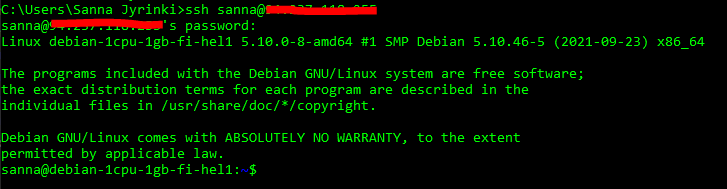
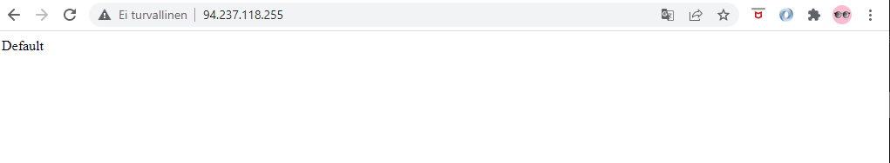
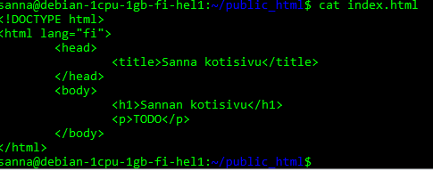
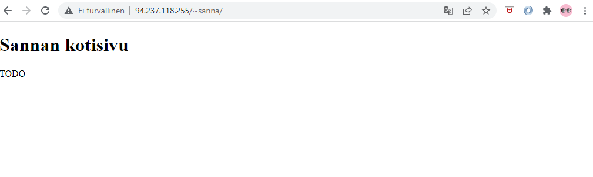
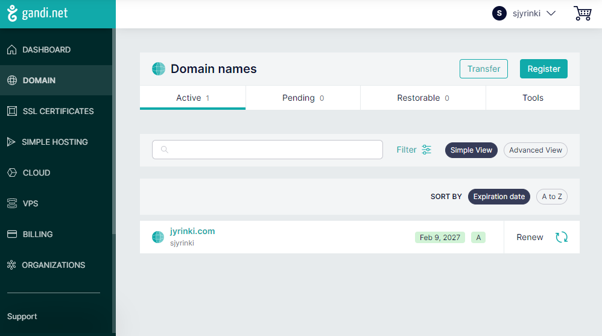
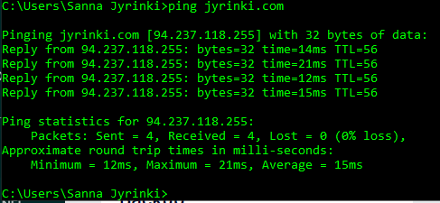

Harjoitus H4
Lähteet
Karvinen, T. 2017. First Steps on a New Virtual Private Server – an Example on DigitalOcean and Ubuntu 16.04 LTS. Luettavissa https://terokarvinen.com/2017/first-steps-on-a-new-virtual-private-server-an-example-on-digitalocean/?fromSearch=first%20steps . Luettu 10.2.2022.
Karvinen, T. 2018. Name Based Virtual Hosts on Apache – Multiple Websites to Single IP Address Luettavissa https://terokarvinen.com/2018/name-based-virtual-hosts-on-apache-multiple-websites-to-single-ip-address/?fromSearch=name%20based%20virtual . Luettu 10.2.2022.
Tehtävä z, tiivistelmä artikkeleista
Karvinen, 2017: First Steps on a New Virtual Private Server – an Example on DigitalOcean and Ubuntu 16.04 LTS
- Artikkeli kertoo kuinka vuokraat virtuaalipalvelimen DigitalOceanilta ja vuokraat nimipalvelun NameCheap:lta
- Opiskelija saat GitHub Education paketin ja saat ilmaisen .me päätteisen osoitteen
- Muitakin paikkoja on, esim. Linode ja Gandi
Karvinen, 2018: Name Based Virtual Hosts on Apache – Multiple Websites to Single IP Address
- Artikkeli opastaa, miten asennat Apache webbiserverin virtuaalipalvelimeesi
- On myös kerrottu, miten teet yksinkertaisen ensimmäisen oman html-sivun palvelimelle
Tehtävä a, palvelin pilveen
Ennen oppintuntia olin jo vuokrannut nimen jyrinki.com Gandilta ja virtuaalipalvelintilan UpCloud:lta. En ollut vielä asentanut palvelinta. Kirjauduin saamillani tunnuksilla UpCloadin konsolille osoitteeseen https://hub.upcloud.com/.
Lisäsin palvelimen, valitsin sijainniksi suomi ja otin halvimman paketin
1 core
1 GB memory
25 GB storage
1 TB transfer.
Valitsin käyttöjärjestelmäksi Debian GNU/Linux 11 (Bullseye) ja sisäänkirjautumistavaksi One time passwprd.
Muuten menin oletusasetuksilla.

Sähköpostiini tuli ilmoitus palvelimen perustamisesta, palvelimen ip-osoite ja root-tunnuksen salasana. Kirjaudun windowsin komentokehotteella ssh:lla palvelimelle
ssh root@iposoite
Tehtävä d, tulimuuri
Asennetaan tulimuuri. Jotta tämä onnistuu, pitää kuitenkin ensin asentaa ufw, eli tehdään
sudo apt-get update
sudo apt-get -y install ufw
Tehdään ensin tulimuuriin reikä ssh-yhteydelle, jotta palvelimelle kirjautuminen jatkossakin onnistuu
sudo ufw allow 22/tcp
Laitetaan tulimuuri päälle
sudo ufw enable
Saadaan ilmoitus 'Firewall is active and enabled on system startup'.
Vaikkei tässä tehtävässä pyydetty, niin luodaan oma käyttäjätunnus sanna ja annetaan sille sudo oikeus
sudo adduser sanna
sudo adduser sanna sudo
sudo adduser sanna adm
Avataan toinen konsoli, ja kokeillaan nyt, että sanna tunnuksella kirjautuminen onnistuu
ssh sanna@iposoite
Suljetaan vielä root tunnus, jatkossa kirjaudutaan omalla sanna-tunnuksella
sudo usermod --lock root
Estetään kokonaan root tunnuksella kirjautuminen muokkaamalla
sudoedit /etc/ssh/sshd_config
muutetaan siinä 'PermitRootLogin no'
Startataan ssh
sudo service ssh restart
Tehtävä e, Apache asennus
Aluksi päivitetään 'sudo apt-get update', tämä yritetään muistaa aina ennen asennuksia tms.
Asennetaan Apache2
sudo apt-get -y install apache2
Korvataan testisivu
echo "Default"|sudo tee /var/www/html/index.html
Avataan tulimuuriin reikä apachen portille
sudo ufw allow 80/tcp
Testataan, että testisivuni toimii
Käyttäjän omat kotisivut
Asennetaan tekstieditori micro, jota on mukava käyttää html tiedoston editointiin
sudo apt-get -y install micro
Tehdään kotihakemistoon public_html ja sen alle index.html
cd /home/sanna
mkdir public_html
cd public_html
micro index.html
Editoin html koodin seuraavaksi
Testasin selaimessa sivua, muttei se vielä toimi, täytyy h3 tehtävän tapaan
sudo a2enmod userdir
sudo service apache2 restart
Nyt sivuni näkyy
Testaan nyt myös kännykällä, että sivuni näkyy

Domain nimi käyttöön
Aiemmin olen varannut gandi.net palvelusta domain nimen, konffataan se nyt palvelimen ip-osoitteeseen
Siirrytään Domain -> DNS Records
Otetaan ensin varmuuskopio alkuasetuksista, tämä onnistuu valitsemalla Text Mode ja kopioimalla sisältö omalle koneelle tekstitiedostoon
Lisätään 2 DNS Recordia
- Name=@, Type=A-type, TTL=300, Value=palvelimen ip-osoite
- Name=www, Type=A-type, TTL=300, Value=palvelimen ip-osoite
Poistetaan alkuperäinen @ A-type arvo, jonka ip oli 217.70.184.38, joka ilmeisesti on jokin gandin palvelin
Kokeillaan windowsista pingata 'ping jyrinki.com' eli domain nimi löytyy
Testataan selaimella osoitetta jyrinki.com/~sanna
Jihuu, sivuni näkyvät domain nimelläni
Tehtävä f, päivitetään ohjelmat
Lopuksi vielä päivitin ohjelmat
sudo apt-get update
sudo apt-get upgrade